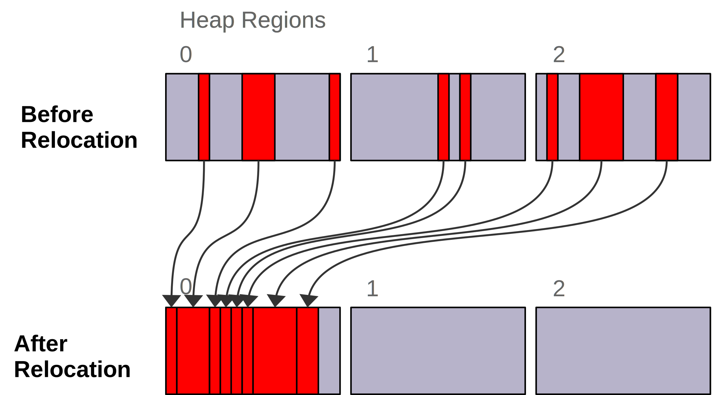
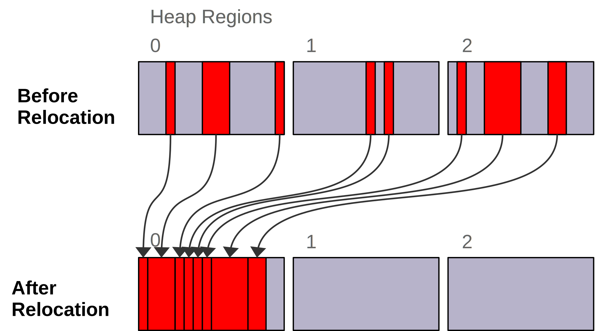
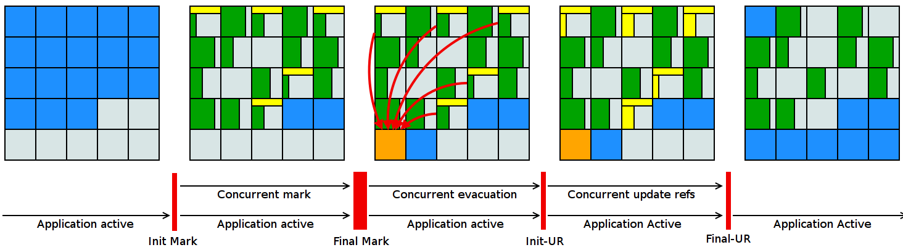
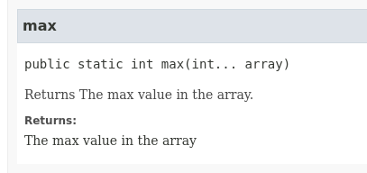

-XX:+UseZGC
Benjamin Schmid @bentolor <ben@tolor.de>
Garbage Collectoren
Class-Data Sharing
Java Flight Recorder
Foreign Function & Memory
Tooling
Details & Maintenance
11 | ZGC Experimental |
12 | Shenandoah Experimental |
13 | ZGC Uncommit Memory |
14 | & ZGC Support |
15 | Shenandoah Production-ready |
16 | ZGC Improvements |
Moderne Architekturen: Multi-Core & TB RAM
kurze GC Pausen im ms-Bereich
→ erkauft Responsiveness gegen Durchsatz
(fast) vollständig parallel & nebenläufig
Pausen unabhängig von Größe des Heaps
Unterstützen Class Unloading & Uncommit Memory
Einfach & Konfigurationsarm

-XX:+UseZGC
„A scalable low-latency garbage collector“
GC Pausen kleiner 10ms 1ms
Durchsatz max. -15% gegenüber G1
Heapgrößen 8MB – 16TB
Einfaches Tuning
Colored Pointers & Load Barriers
→ Object Relocation
„A low-pause-time garbage collector by concurrent evacuation work“
ZGC sehr ähnlich Brooks (Forward) Pointers
Bietet verschieden Modi & Heuristic-Profile: adaptive, static, compact, aggressive
Beil zahlreichen Weak References → ZGC
Red Hat Kind → andere Service Offerings
Backports für JDK 8 & 11; auch 32-bit
ggü. ZGC: abhängig von Root- & Live-Set
-XX:+UseShenandoahGC

| GC | Optimiert für… | Kommentar |
|---|---|---|
G1 | Balance | Üblicher Default. Überwiegend Nebenläufig. Zielt auf Balance von Durchsatz & Latenz. Außreißer-Pausen bis 250~800ms. Guter Durchsatz. Häppchenweise Pausen an Zeitbudget orientiert. |
Shenandoah | Latenz | Auch verfügbar für JDK8, JDK11 und 32-bit. |
ZGC | Latenz | besser für |
ParallelGC | Durchsatz | Parallel & mehrere Threads. Hoher Durchsatz. |
SerialGC | Speicherbedarf | Single-Threaded. Empfiehlt sich nur für Heaps ~100MB. |
Zing/Azul | Pauseless | Nicht im OpenJDK; nur kommerziell verfügbar |
Epsilon Bug TLABs extension 14
Epsilon warns about Xms/Xmx/… 14
OldGen on NV-DIMM 12
Uncommit Memory 12
Improved Sparse PRT Ergonomics 13
NUMA-Aware Memory Alloc. JEP 354 14
Improved Heap Region Ergonomics 15
Concurrently Uncommit Memory 16
Upgrade lohnt sich!
Probieren geht über Studieren!
Mut zum (probeweisen) Wegwerfen:
Alte Tuning-Parameter
Latenz wichtig? → ZGC oder Shenandoah
Reduziert Startzeiten & Speicherbedarf neuer JVMs
durch .jsa Archiv mit Metadaten der Klassen.
→ Klassen liegen vorgeparsed direkt für die JVM verwendbar vor. Das Archiv kann read-only eingebunden werden, was dem OS Caching & Sharing erlaubt.
Achtung: Archive sind JVM Plattform- und Versionspezifisch!
Erlaubt zusätzlich Applikations-Klassen in das CDS aufzunehmen.
JVM liefert nun per Default ein classes.jsa CDS-Archiv mit aus, welches ein Subset der häufigsten JDK-Klassen umfasst.
Vereinfacht erheblich die Erstellung eigener AppCDS Archive durch automatische Auswahl und Archiverzeugung beim beenden der Java-Applikation.
$ java -Xshare:off -XX:DumpLoadedClassList=myclasses.txt -cp myapp.jar MyApp
$ java -Xshare:dump -XX:SharedArchiveFile=myapp.jsa \
-XX:SharedClassListFile=myclasses.txt -cp myapp.jar↓
$ java -XX:ArchiveClassesAtExit=myapp.jsa -cp myapp.jar MyApp$ java -XX:SharedArchiveFile=myapp.jsa -cp myapp.jar MyAppjlink
OS, JVM, JDK & App Diagnostik
extrem geringer Overhead (~1%)
built-in & jederzeit aktivierbar
always-on möglich → Timemachine
→ Production Profiling & Monitoring
Flight Recorder Demo
jcmd
jcmd <pid> JFR.start jcmd <pid> JFR.dump \ filename=record.jfr
Optionen: filename, delay, dumponexit, duration, maxage, maxsize, …
jfr print record.jfr jfr print \ --events CPULoad \ --json record.jfr jfr summary record.jfr
Reported sekündlich CPU Usage und aktive Locks länger als 10ms:
try (var rs = new RecordingStream()) {
rs.enable("jdk.CPULoad").withPeriod(Duration.ofSeconds(1));
rs.enable("jdk.JavaMonitorEnter").withThreshold(Duration.ofMillis(10));
rs.onEvent("jdk.CPULoad", event -> {
System.out.println(event.getFloat("machineTotal"));
});
rs.onEvent("jdk.JavaMonitorEnter", event -> {
System.out.println(event.getClass("monitorClass"));
});
rs.start(); // Blockierender Aufruf, bis Stream endet/geschlossen wird
// rs.startAsync(); Alternative im separaten Thread
}JFR Eventtypen: https://bestsolution-at.github.io/jfr-doc/
EventStream.openRepository()) {…}EventStream.openRepository(Path.of("…")))try (var stream = new RecordingStream()) { … }String url = "service:jmx:rmi:///jndi/rmi://myhost.de:7091/jmxrmi";
JMXConnector c = JMXConnectorFactory.connect(new JMXServiceURL(url));
MBeanServerConnection conn = c.getMBeanServerConnection();
try (RemoteRecordingStream stream = new RemoteRecordingStream(conn)) { … }import jdk.jfr.*;
@Name("de.bentolor.ButtonPressed")
@Label("Button Pressed")
@StackTrace(false)
public class ButtonEvent extends Event {
@Label("Button name")
public String name;
@Label("Source")
public String trigger;
@Label("Number of Bounces")
@DataAmount
public int bounces;
@Label("Has timeouted")
public boolean timeouted;
}ButtonEvent evt = new ButtonEvent();
if(evt.isEnabled()) {
evt.name = "Button 1";
evt.trigger = "Keyboard";
evt.begin();
}
// doSomething()
if(evt.isEnabled()) {
evt.end();
evt.timeouted = false;
evt.bounces = 3;
evt.commit();
}Recording mitlaufen lassen und bei Performance-Problemen rückwirkend seit Problemstartpunkt aus dem JFR Event Repository extrahieren & analysieren („Timeshift“)
Auslieferung experimenteller Sprach- und JVM-Features,
oft in Iterationen, zur Förderung von frühem Community Feedback.
z.B.: Pattern Matching, Switch Expression, Text Blocks, Records, Sealed Classes
javac --enable-preview …java --enable-preview …
Keine Cross-compilation mittels --release xx möglich!
Analog Preview Features für nicht-finale APIs und Tools
javac --add-modules jdk.incubator.foo …
java --add-modules jdk.incubator.foo …z.B.: HTTP/2 Client, Packaging Tool, …
26 Jahre alt
erfordert .c & .h-Files
mehrstufiger Prozess:
kleinteilig & brüchig
↓
sehr verworren
Starke Drittbibliotheken (z.B. ML/AI) mit dynamischer Entwicklung
Tensorflow, OpenSSL, libodium, …
Introduce an API by which Java programs can interoperate with code and data outside of the Java runtime […] without the brittleness and danger of JNI.
Ziele: Einfachheit – Performance – Sicherheit
import java.lang.invoke.*;
import jdk.incubator.foreign.*;
class CallPid {
public static void main(String... p) throws Throwable {
var libSymbol = CLinker.systemLookup().lookup("getpid").get(); (1)
var javaSig = MethodType.methodType(long.class); (2)
var nativeSig = FunctionDescriptor.of(CLinker.C_LONG); (3)
CLinker cABI = CLinker.getInstance();
var getpid = cABI.downcallHandle(libSymbol, javaSig, nativeSig); (4)
System.out.println((long) getpid.invokeExact()); (5)
}
}| 1 | adressiertes Symbol – hier via Lookup in den System Libraries |
| 2 | gewünschte Java-Signatur des Java Foreign Handles |
| 3 | Ziel-Signatur der aufzurufenden C-Funktion |
| 4 | Funktionshandle beziehen |
int crypto_box_seal(unsigned char *c, const unsigned char *m,
unsigned long long mlen, const unsigned char *pk)…liest Text aus *m, Zielschlüssel *pk und schreibt
verschlüsseltes Ergebnis in nativen Speicher *c
↓
var cryptoBoxSeal = CLinker.getInstance().downcallHandle(
SymbolLookup.loaderLookup().lookup("crypto_box_seal").get(),
MethodType.methodType(int.class,
MemoryAddress.class, MemoryAddress.class,
long.class, MemoryAddress.class),
FunctionDescriptor.of(C_INT,
C_POINTER, C_POINTER,
C_LONG_LONG, C_POINTER) );ResourceScope verwaltettry (var scope = ResourceScope.newConfinedScope()) { … }var plainMsg = CLinker.toCString("abc", scope);var cipherText = scope.allocate(48 + plainMsg.byteSize(), scope);
var pubKey = scope.allocateArray(C_CHAR, publicKey);var ret = (int) cryptoBoxSeal.invokeExact(
cipherText.address(), plainMsg.address(),
(long) plainMsg.byteSize(), pubKey.address());
return cipherText.toByteArray();jextractGeneriert aus direkt aus .h-Dateien passende API Wrapper
als .class oder .java mit den notwendigen Foreign API-Aufrufen.
Nicht direkt in JDK 17 enthalten, sondern via Panama EAP JDK Builds (siehe Link).
$ jextract -t de.bentolor /usr/include/unistd.himport de.bentolor.unistd_h;
class CallPid {
public static void main(String[] args) {
System.out.println( unistd_h.getpid() );
}
}jextract Demo (Transcript)mkdir hello-python
cd hello-python
locate Python.h
jextract -t de.bentolor \
-l python3.8 \
-I /usr/include/python3.8/ \
-I /usr/include/ \
/usr/include/python3.8/Python.h
joe Schlange.java
java --add-modules jdk.incubator.foreign \
--enable-native-access=ALL-UNNAMED \
-Djava.library.path=/usr/lib/x86_64-linux-gnu/ \
Schlange.java
jextract -t de.bentolor \
-l python3.8 \
-I /usr/include/python3.8/ \
-I /usr/include/ \
--source
/usr/include/python3.8/Python.h
bat de/bentolor/Python_h.java
bat de/bentolor/Python_h_4.java
/s int PyRun_Simport jdk.incubator.foreign.*;
import de.bentolor.Python_h;
public class Schlange {
public static void main(String[] args) {
String script = """
print(sum([33, 55, 66]));
print('Hello Python 3!')
""";
Python_h.Py_Initialize();
try (var scope = ResourceScope.newConfinedScope()) {
var str = CLinker.toCString(script, scope);
Python_h.PyRun_SimpleStringFlags(
str, MemoryAddress.NULL);
Python_h.Py_Finalize();
}
}
}jpackage JEP 343 JEP 392Werkzeug zum Erstellen & Paketieren eigenständiger Java-Applikationen
→ .msi und .exe
→ .pkg und .dmg
→ .deb und .rpm
Start-Optionen (JVM/App)
Meta-Daten
Datei-Assoziationen
Splash-Screen
Auto-Update Mechanismus
javadocDas Javadoc-Tool hat mit JDK16 umfassende Verbesserungen erfahren…
Verbesserte Suche
Fehler zeigen Code-Ausschnitt
Neues/Verbessertes New, Deprecated, Related Package
Mobile-friendly Layout[.decent]#
autom. Links zur JDK API
Checks für leere Absätze
Bessere "Typ"-Terminologie
Bessere Darstellung von @see, Paketen, Nested Class, u.a.
{@return …}-Shortcut/** {@return The max value in the array} */
public static int max(final int... array) {↓

class MyClass {
record Person(String name, String email) {}
public static void main(String[] args) {
var p = new Person("Peter", null); (1)
var e = p.email().toLowerCase();
}
}$ java MyClass.java
Exception in thread "main" java.lang.NullPointerException: Cannot invoke "String.toLowerCase() because the return value of "MyClass$Person.email()" is null
at MyClass.main(MyClass.java:5)| 1 | Für Namen von lokalen Variablen und Lambdas mit -g:vars compilieren! |
Strongly Encapsulate JDK Internals JEP 391
macOS/AArch64 Port JEP 391
SecurityManager forRemoval JEP 411
Always-Strict Floating-Point Semantics JEP 306
Asynchrones Unified JVM Logging (-Xlog:async)
Ausführlichere Crashs: -XX:+ExtensiveErrorReports
Unicode 10 → 13; CLDR 33 → 39
Krypto: Deprecated Ciphers/Signatures, Enhanced PRNG JEP 356
Ahead-of Time compiler (AoT)
Polyglotte VM für div. Sprachen
→ JVM (Java, Kotlin, Scala, …)
→ LLVM (C, C++) → native
→ Java Script, Python, Ruby, R
Sprachen sharen Runtime
→ Zero Interop Overhead
Native executables (SubstrateVM)
→ Kleiner Startup & Memory
GraalVM Community & Enterprise
Helidon, Quarkus.io, Micronaut, Spring Fu, Ktor, …
→ zielen auf GraalVM AoT & Microservices, z.B. via IoC zur Compiletime